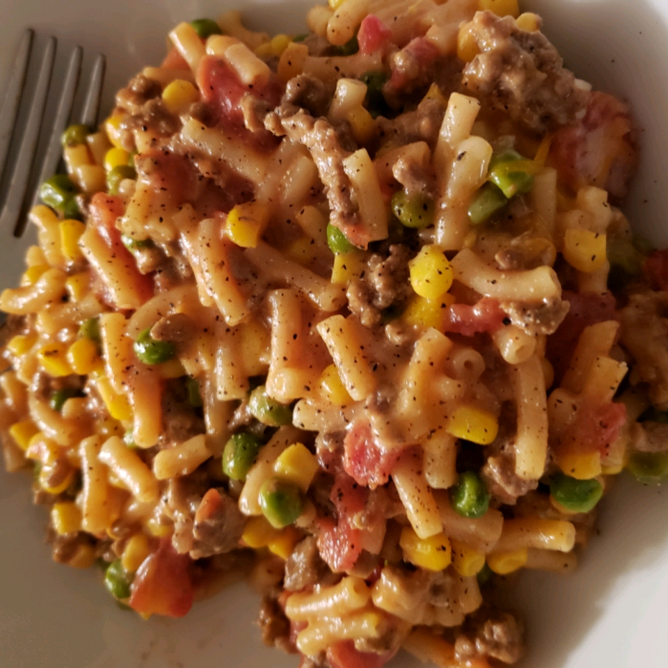

Shipwreck Dinner

Description
It's not pretty but, it's a tasty, busy-night, kid-friendly meal. It's not 'gourmet,' but it's hot filling and easy. The prep time is generally limited to how fast your can opener works and how hard it is to unwrap your meat. The big bonus is that it's a complete one-pot meal with no chopping, unless you want to.
Ingredients
- 1 pound lean ground beef
- (7.25 ounce) package macaroni and cheese mix
- 1 (14.5 ounce) can diced tomatoes
- 1 cup milk
- 1 cup frozen peas
- 1 cup frozen corn
- 1 teaspoon seasoned salt (such as LAWRY'S®), or to taste
- 1 cup shredded Cheddar cheese, divided
Steps
- Heat a large skillet over medium-high heat. Cook and stir beef in the hot skillet until browned and crumbly, 5 to 7 minutes.
- Stir pasta and cheese mixture from the macaroni and cheese package into the beef. Add tomatoes, milk, peas, and corn to the beef mixture; stir. Bring the mixture to a boil, reduce heat to medium-low, place a cover on the skillet and cook at a simmer until the noodles are tender, about 12 minutes.
- Season the dish with seasoned salt. Stir about half of the Cheddar cheese into dish to melt. Top with remaining cheese.